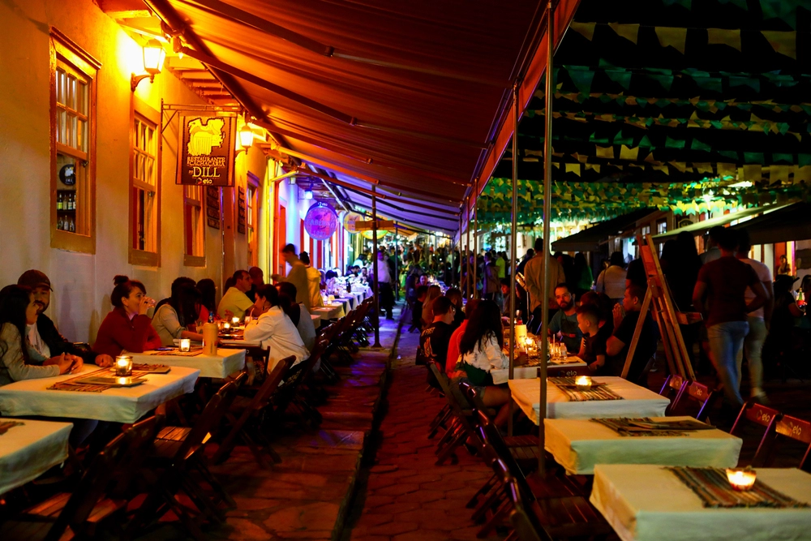
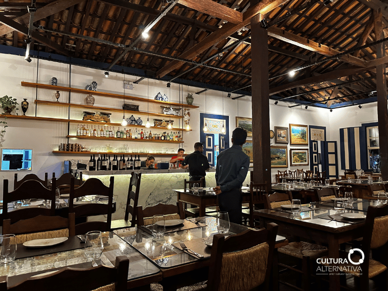
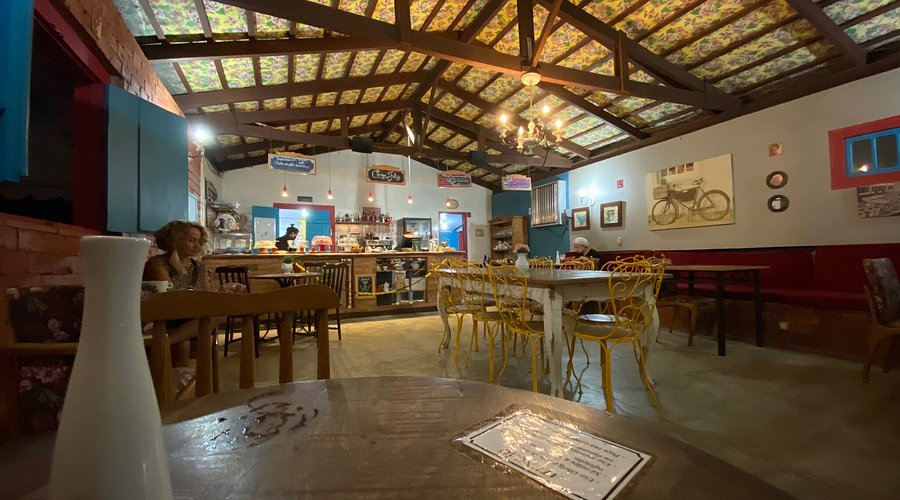

- Rua do lazer
- Chico de Sá Cozinha
- Pé di café

A Rua do Lazer é o principal ponto culinário da cidade de Pirenópolis, nela se concentram diversos restaurantes, bares, cafés e brunchs que servem pratos da culinária goiana.
O local é bem amplo, e se inspira também na arquitetura colonial em todos os estabelecimentos, possuindo elementos como as ruas de pedra, barracas, decorações em madeira e pedras e iluminada por lamparinas.
A culinária é extremamente diversificada, típica da região goiana, sendo alguns dos principais pratos o arroz com pequi, guariroba, empadão, café tradicional, panini e muitos outros.

O restaurante Chico de Sá é sem dúvidas o mais conhecido e tradicional da cidade, possuindo uma boa estruturação, ambiente confortável e convidativo, música boa e atendimento sem igual. Segue abaixo os principais aperitivos e bebidas.
O carro chefe da casa é o típico "cupim bressado", preparado com técnicas tradicionais e longevas que ressaltam o sabor da carne, deixando extremamente suculenta e forte. Além desse prato, dois outros que merecem atenção são o filé de pirarucu, que mistura ingredientes locais para o tempero forte, e o risoto de abóboras, que é uma opção para os veganos.
Outrossim, as bebidas também impressionam, usando a famosa cachaça e frutas frescas da região, são preparados diversos drinks, como a margarita que possui um sabor marcante e principalmente os vinhos, já que o estabelecimento conta com uma curadoria especial tanto de vinhos nacionais quanto internacionais.
O local possui excelentes avaliações, sendo considerado uma "experiência gastronômica" e pode ser visitado de segunda a quinta das 16hrs às 00hrs e de sexta a domingo das 12hrs às 00hrs.

A cafeteria "Pé di café" é muito tradicional em Pirenópolis, sendo um dos locais mais bem avaliados da cidade por seu ambiente assemelhado a uma fazenda, clima aconchegante e bom atendimento. Além disso, possui um cardápio bem amplo, com bebidas quentes e geladas, sobremesas e salgados dignos de uma cafeteria. Segue abaixo os principais nomes do menu.
Começando pelas bebidas, o estabelecimento oferece cappuccinos, cafés quentes e gelados, chocolate europeu e o principal que é o café da cafeteira italiana Moka, muito famosa na região e com certeza a bebida mais marcante e tradicional do cardápio.
Além das bebidas, outro ponto forte da cafeteria são os doces, sendo os principais o waffle e várias tortas artesanais. Mas a surpresa da casa é o brownie recheado, que pode ser combinado com nutella, sorvete, leite ninho e chocolate artesanal.
Por fim mas não menos importante temos os salgados, como pão de queijo recheado, croisssant recheado e o famoso panini feito com ingredientes típicos da região. Vale destacar que o local oferece opções de salgados para intolerantes a glúten e a lactose e aos veganos.
O local é ideal para curtir com a família e funciona de terça a domingo das 8:30 da manhã as 20hrs.